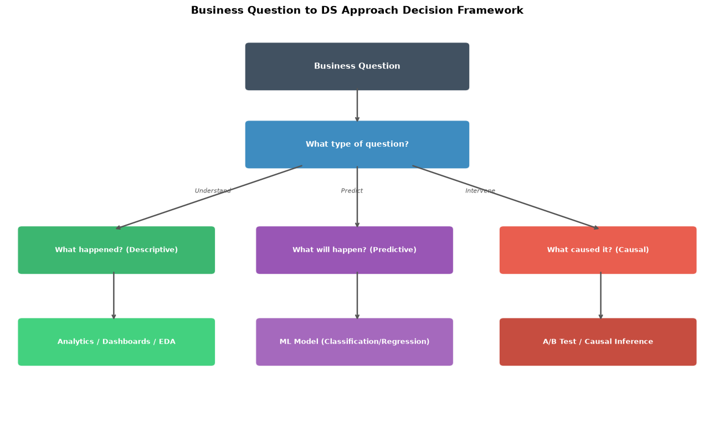
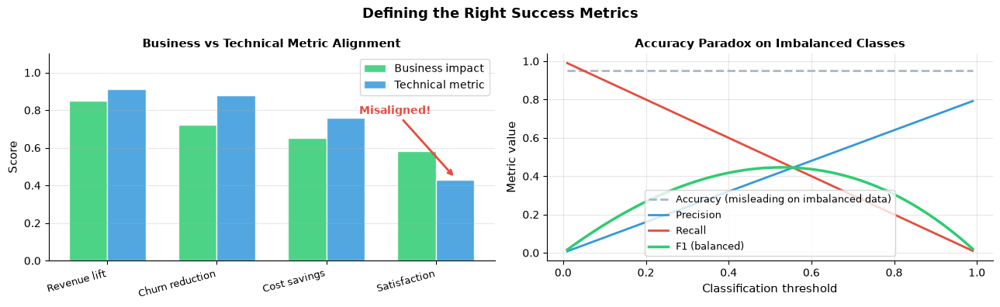

How do you frame a data science problem?#
Topics: Business to DS Translation · Analytics vs ML vs Causal · Business Metrics Selection · Success Metrics · Scoping · Feasibility · When NOT to Use ML
Abbreviation Reference#
Abbreviation |
Full Name |
|---|---|
AUC |
Area Under the Curve |
CAC |
Customer Acquisition Cost |
CTR |
Click-Through Rate |
DAU |
Daily Active Users |
DS |
Data Science |
EDA |
Exploratory Data Analysis |
LTV |
Lifetime Value (also: Customer Lifetime Value, CLV) |
MAU |
Monthly Active Users |
MDE |
Minimum Detectable Effect |
ML |
Machine Learning |
NPS |
Net Promoter Score |
OMTM |
One Metric That Matters |
RMSE |
Root Mean Squared Error |
1. Business problem to DS problem translation#
What it is#
The most important step — solving the wrong problem perfectly is worthless
Translate a vague business question into a precise, answerable DS question
The method follows from the question — never pick the method first
Three types of DS questions#
Type |
Question |
Method |
|---|---|---|
Descriptive |
What happened? |
Analytics, EDA, dashboards |
Predictive |
What will happen? |
ML models |
Causal |
What caused it? |
Causal inference, A/B testing |
Gotchas#
‘Can we predict X?’ is not a business question — ask ‘what decision will this inform?’
Descriptive questions are often answered faster than ML
Causal questions require experiments or causal ML — not just predictive models
import matplotlib.pyplot as plt
import matplotlib.patches as mpatches
import numpy as np
fig, ax = plt.subplots(figsize=(13, 8))
ax.set_xlim(0, 13); ax.set_ylim(0, 9); ax.axis('off')
ax.set_title('Business Question to DS Approach Decision Framework', fontsize=14, fontweight='bold')
def box(ax, x, y, w, h, text, color, fontsize=9):
rect = mpatches.FancyBboxPatch((x, y), w, h,
boxstyle='round,pad=0.08', facecolor=color, edgecolor='white', linewidth=1.5, alpha=0.9)
ax.add_patch(rect)
ax.text(x+w/2, y+h/2, text, ha='center', va='center',
fontsize=fontsize, fontweight='bold', color='white')
def arr(ax, x1, y1, x2, y2):
ax.annotate('', xy=(x2, y2), xytext=(x1, y1),
arrowprops=dict(arrowstyle='->', color='#555', lw=1.8))
box(ax, 4.5, 7.5, 4.0, 0.9, 'Business Question', '#2C3E50', 11)
box(ax, 4.5, 5.8, 4.0, 0.9, 'What type of question?', '#2980B9', 10)
box(ax, 0.3, 3.5, 3.5, 0.9, 'What happened? (Descriptive)', '#27AE60')
box(ax, 4.7, 3.5, 3.5, 0.9, 'What will happen? (Predictive)', '#8E44AD')
box(ax, 9.2, 3.5, 3.5, 0.9, 'What caused it? (Causal)', '#E74C3C')
box(ax, 0.3, 1.5, 3.5, 0.9, 'Analytics / Dashboards / EDA', '#2ECC71')
box(ax, 4.7, 1.5, 3.5, 0.9, 'ML Model (Classification/Regression)', '#9B59B6')
box(ax, 9.2, 1.5, 3.5, 0.9, 'A/B Test / Causal Inference', '#C0392B')
arr(ax, 6.5, 7.5, 6.5, 6.7)
arr(ax, 5.5, 5.8, 2.0, 4.4)
arr(ax, 6.5, 5.8, 6.5, 4.4)
arr(ax, 7.5, 5.8, 11.0, 4.4)
arr(ax, 2.0, 3.5, 2.0, 2.4)
arr(ax, 6.5, 3.5, 6.5, 2.4)
arr(ax, 11.0, 3.5, 11.0, 2.4)
ax.text(3.5, 5.2, 'Understand', fontsize=8, color='#555', style='italic')
ax.text(6.2, 5.2, 'Predict', fontsize=8, color='#555', style='italic')
ax.text(8.5, 5.2, 'Intervene', fontsize=8, color='#555', style='italic')
plt.tight_layout()
plt.savefig('ds_decision_framework.png', dpi=120, bbox_inches='tight')
plt.show()
print('Framework: Business question -> question type -> method')

Framework: Business question -> question type -> method
2. Business metrics selection#
What it is#
Before defining technical metrics, identify the right business metric for your context
Lean Analytics framework: focus on the One Metric That Matters (OMTM) per business stage
Wrong metric at the right stage is better than the right metric at the wrong stage
Lean Analytics: business stage → right metric family#
Stage |
Core question |
Key metrics |
|---|---|---|
Empathy |
Do people have this problem? |
Qualitative signals, interview themes |
Stickiness |
Do people keep using it? |
Retention D1/D7/D30, Daily Active Users/Monthly Active Users (DAU/MAU) ratio, session depth |
Virality |
Do people share it? |
Referral rate, K-factor, Net Promoter Score (NPS) |
Revenue |
Can we make money? |
Conversion rate, Lifetime Value (LTV), Customer Acquisition Cost (CAC), LTV/CAC ratio |
Scale |
Can we grow efficiently? |
Margin, Monthly Recurring Revenue (MRR) growth rate, payback period |
Lean Analytics: business model → right metric focus#
Business model |
Primary metric focus |
|---|---|
E-commerce |
Conversion rate, average order value, repeat purchase rate |
Software as a Service (SaaS) |
MRR (MRR = active subscribers × avg monthly fee), churn rate (churned users / total users), LTV/CAC |
Marketplace |
Liquidity (match rate), Gross Merchandise Value (GMV), take rate |
Media / content |
Click-Through Rate (CTR), time on site, DAU/MAU |
Mobile app |
DAU, D1/D7/D30 retention, session length |
Metric roles — definitions#
Top tier metric (OMTM)
The single metric the team optimizes for at the current business stage
Drives prioritization and resource allocation
Changes as the business stage changes — revisit regularly
Everything else is subordinate to this
Operational metrics
Day-to-day signals that explain why the top tier metric is moving
Used for diagnosis and monitoring, not optimization targets
High operational metric with low top tier metric = vanity metric problem
Guardrail metrics
Metrics that must not regress while optimizing the top tier metric
Never the optimization target — but a breach stops the ship decision
Chosen to detect unintended harm from optimizing the top tier metric
Metric role classification#
Metric |
Formula |
Top tier when |
Operational when |
Guardrail when |
|---|---|---|---|---|
DAU / WAU / MAU |
active users in period / total users |
Stickiness stage — coming back is the primary question |
Revenue / scale stage — explains movements in LTV or MRR |
Virality stage — ensure growth doesn’t inflate installs without genuine usage |
DAU / MAU ratio |
DAU / MAU |
Stickiness stage — depth of habit is the primary question |
Revenue stage — diagnoses engagement quality behind conversion numbers |
Scale stage — efficiency gains must not come at cost of engagement |
D1 / D7 / D30 retention |
users active on day n / users acquired on day 0 |
Stickiness stage — whether the product has found its hook |
Any stage — leading indicator of long-term LTV |
CTR or DAU optimization — prevents notification spam inflating engagement |
Conversion rate |
conversions / total visitors |
E-commerce revenue stage — funnel health is primary |
Any stage — diagnoses how well acquisition translates to revenue |
Stickiness stage — retention efforts must not filter out converting users |
LTV |
avg order value × purchase frequency × avg customer lifespan |
Revenue / scale stage — long-term sustainability is primary |
Stickiness stage — projects long-term value of retained users |
Virality stage — growth must not come from low-LTV users |
CAC |
total acquisition spend / new customers acquired |
— (rarely optimized directly; minimizing CAC can starve growth) |
Revenue stage — diagnoses acquisition efficiency by channel |
Scale stage — MRR growth must not be driven by unsustainable acquisition spend |
LTV / CAC ratio |
LTV / CAC |
Revenue / scale stage (SaaS) — defines unit economics |
Any stage — overall health check on business model |
Growth stage — paid campaigns must not push ratio below 3× |
MRR growth rate |
(MRR this month − MRR last month) / MRR last month |
Scale stage (SaaS) — growth efficiency is primary |
Revenue stage — tracks progress toward sustainability |
Scale stage — growth must not come at cost of rising churn rate |
CTR |
clicks / impressions |
Media / content at revenue stage — ad revenue tied directly to clicks |
Any stage — engagement signal for ranking and recommendations |
Any stage — optimization must not sacrifice post-click quality or retention |
K-factor |
invites sent per user × conversion rate of invites |
Virality stage — organic growth rate is primary |
Any stage — measures word-of-mouth contribution to growth |
— |
NPS |
% promoters (score 9–10) − % detractors (score 0–6) |
B2B scale stage — expansion revenue depends on satisfaction |
Any stage — leading indicator of retention and churn |
Revenue stage — conversion optimizations must not erode satisfaction |
GMV |
sum of all transaction values |
Marketplace scale stage — total volume drives the business model |
Marketplace revenue stage — tracks platform activity behind take rate |
— |
The OMTM principle#
Pick one metric that best represents where you are in the business stage
Everything else becomes either an operational or guardrail metric — not the target
OMTM changes as the business stage changes — revisit it regularly
Gotchas#
Optimizing CTR → clickbait problem
Optimizing DAU → notification spam problem
Optimizing conversion rate without retention → acquisition treadmill
Using revenue stage metrics at the stickiness stage → optimizing the wrong thing
A metric that is top tier at one stage becomes a guardrail at another — always check the current stage first
3. Defining success metrics#
What it is#
Every DS project needs two types of metrics defined upfront
Business metrics — what the stakeholder cares about (revenue, retention, cost)
Technical metrics — what you optimize (AUC, Root Mean Squared Error (RMSE), precision/recall)
They must be connected — technical metric should proxy for business metric
Common disconnects#
Technical metric |
Business reality |
Problem |
Better technical proxy |
|---|---|---|---|
High AUC |
No revenue improvement |
Predictions not acted on |
Precision at top K (matches budget constraint) |
Low RMSE |
Wrong user experience |
Average hides important tail cases |
Quantile loss at the relevant tail |
High accuracy |
Imbalanced classes |
95% accuracy on 5% event = always predict no event |
F1, precision/recall at operating threshold |
High CTR |
Low downstream conversion |
Optimizing for clicks not outcomes |
Post-click conversion rate |
Gotchas#
Define metrics BEFORE modeling — not after seeing results
Include a guardrail metric — something that must NOT get worse
Get stakeholder sign-off on the metric definition early
import matplotlib.pyplot as plt
import numpy as np
fig, axes = plt.subplots(1, 2, figsize=(13, 4))
# Business vs technical metric alignment
categories = ['Revenue lift', 'Churn reduction', 'Cost savings', 'Satisfaction']
business = [0.85, 0.72, 0.65, 0.58]
technical = [0.91, 0.88, 0.76, 0.43]
x = np.arange(len(categories)); w = 0.35
axes[0].bar(x-w/2, business, w, color='#2ECC71', alpha=0.85, edgecolor='white', label='Business impact')
axes[0].bar(x+w/2, technical, w, color='#3498DB', alpha=0.85, edgecolor='white', label='Technical metric')
axes[0].set_xticks(x); axes[0].set_xticklabels(categories, fontsize=9, rotation=15, ha='right')
axes[0].set_ylabel('Score', fontsize=11)
axes[0].set_title('Business vs Technical Metric Alignment', fontsize=11, fontweight='bold')
axes[0].legend(fontsize=10); axes[0].grid(True, alpha=0.3, axis='y'); axes[0].set_ylim(0, 1.1)
axes[0].spines['top'].set_visible(False); axes[0].spines['right'].set_visible(False)
axes[0].annotate('Misaligned!', xy=(3+w/2, 0.44), xytext=(2.3, 0.78),
arrowprops=dict(arrowstyle='->', color='#E74C3C', lw=2),
fontsize=10, color='#E74C3C', fontweight='bold')
# Accuracy paradox
thresholds = np.linspace(0.01, 0.99, 100)
precision = thresholds * 0.8
recall = 1 - thresholds
f1 = 2*(precision*recall)/(precision+recall+1e-8)
axes[1].plot(thresholds, [0.95]*100, color='#AEB6BF', linewidth=2, linestyle='--', label='Accuracy (misleading on imbalanced data)')
axes[1].plot(thresholds, precision, color='#3498DB', linewidth=2, label='Precision')
axes[1].plot(thresholds, recall, color='#E74C3C', linewidth=2, label='Recall')
axes[1].plot(thresholds, f1, color='#2ECC71', linewidth=2.5, label='F1 (balanced)')
axes[1].set_xlabel('Classification threshold', fontsize=11)
axes[1].set_ylabel('Metric value', fontsize=11)
axes[1].set_title('Accuracy Paradox on Imbalanced Classes', fontsize=11, fontweight='bold')
axes[1].legend(fontsize=9); axes[1].grid(True, alpha=0.3)
axes[1].spines['top'].set_visible(False); axes[1].spines['right'].set_visible(False)
plt.suptitle('Defining the Right Success Metrics', fontsize=13, fontweight='bold')
plt.tight_layout()
plt.savefig('success_metrics.png', dpi=120, bbox_inches='tight')
plt.show()

4. Scoping, feasibility & when NOT to use ML#
Scoping checklist#
What exact question is being answered?
Who are the stakeholders and what decisions will they make?
What data is available, where does it live, who owns it?
What is the timeline and definition of done?
What is explicitly OUT of scope?
Feasibility assessment#
Do we have enough data? (volume, history, label quality)
Is the signal strong enough? (is the target predictable at all?)
What is the cost of being wrong? (false positives vs false negatives)
Is the latency requirement achievable? (real-time vs batch)
When NOT to use ML#
A simple rule works well enough
Fewer than ~1000 labeled examples for complex problems
Interpretability is legally required
The problem changes faster than you can retrain
Analytics answers the question — no prediction needed
Interview Q&A#
How do you decide between analytics and ML?
Analytics: question is about the past, stakeholder needs understanding
ML: question is about the future, stakeholder needs to act on a score
When in doubt: start with analytics — validate signal exists before modeling
How do you align stakeholders on metrics?
Show metric definition in writing before starting
Include a concrete example of success
Get explicit sign-off — prevents disputes at the end
Gotchas#
Scope creep kills DS projects — document what is out of scope
Data availability is usually the real constraint — check before committing
A DS project without a decision-maker is a research project